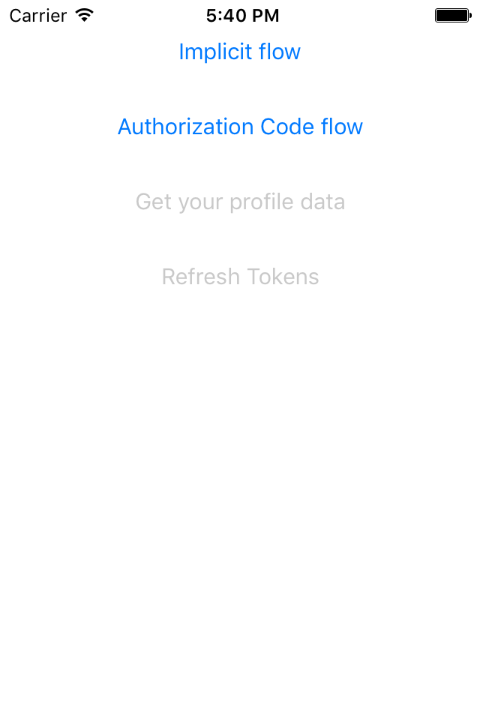

Duration
15 minutes
Goals
The primary goal of this lab is to add the prerequisite components and core code to authenticate using OAuth 2.0.
You will be working on "ComicBook", a fictitious social network for simians and superheroes. You job is to write an app that lets a user view their profile data stored on the ComicBook server. The user interface for the app is complete and is supplied as starter code. You will add code to perform the authentication and networking needed to access user data.
ComicBook's web service stores the name, email address, and profile picture for several pre-existing users. The service is already complete and is hosted live on the web. The API to access the service is protected by OAuth 2.0. You will use the Xamarin.Auth component to do two things: first let the user login and then access the user's profile data.
The image below shows the completed app (running on Android). Here, the user "Clyde" has authenticated and your code has already accessed and displayed their name, email address, and profile image.

The following image shows and earlier stage of the app (running on iOS). This is what you will be working on in this first exercise. You will add code to the click handlers for the Implicit flow button and the Authorization Code flow button to begin the OAuth authorization process.
Required assets
The provided Exercise 1 folder contains a subfolder named Start with a solution you will use to begin this exercise. It also includes a Completed folder with a solution you can use to check your work. Please make sure you have these folders before you begin.
Challenge
- Open the provided starter solution and explore the existing code.
- Add the Xamarin.Auth NuGet package to each project in the solution.
- Initialize the Xamarin.Auth infrastructure in each of the platform-specific projects.
- In MainPage.xaml.cs, find the Implicit button's clicked handler, create an OAuth2Authenticator for the Implicit Flow - use the static values in the provided ServerInfo class.
- In the Authorization Code button's clicked handler, create an OAuth2Authenticator for the Authorization Code Flow - use the static values in the provided ServerInfo class.
Steps
Add Xamarin.Auth
- Open the project in the Start folder.
- Explore the existing code. This is a single-page Xamarin.Forms application with platform-specific projects for Android and iOS. We'll primarily be working in MainPage.xaml.cs contained in the PCL for this exercise.
- Add the Xamarin.Auth NuGet package to each project; this includes the PCL and the platform-specific projects.
Note: Xamarin.Auth now has a dependency on PCLCrypto. If you experience issues installing Xamarin.Auth on any of the projects, you may need to install PCLCypto first. - You can now compile and run the application. Run the ComicBook app on at least one platform. It will show a simple UI but there is currently no behavior for the buttons.
Initialize Xamarin.Auth
- Open AppDelegate.cs in the iOS project.
- In the FinishedLaunching method, call the static Xamarin.Auth.Auth.Init method.
- Open MainActivity.cs in the Android project.
- In the OnCreate method, call the static Xamarin.Auth.Auth.Init method.
Create an OAuth2Authenticator
- Open MainPage.xaml.cs in the PCL.
-
In the ImplicitButtonClicked method, instantiate an
OAuth2Authenticatorobject for the Implicit flow; use"profile"for the scope and thepublicstaticvalues in ServerInfo.cs as constructor parameters. We will not make use of the GetUsernameAsyncFunc parameter so you can omit it from the constructor call. -
In the AuthorizationCodeButtonClicked method, instantiate an
OAuth2Authenticatorobject for the Authorization Code flow; use"profile"for the scope and thepublicstaticvalues in ServerInfo.cs as constructor parameters. We will not make use of the GetUsernameAsyncFunc parameter so you can omit it from the constructor call. - The completed code is shown below. We'll use both instances in the next exercise.
ServerInfo.RedirectionEndpoint static string - it's set to http://localhost/ which is fine - just note the terminating slash!
Summary
In this exercise, you added Xamarin.Auth to the PCL and the platform-specific projects and instantiated OAuth2Authenticator objects for both the Implicit and Authorization Code OAuth flows.